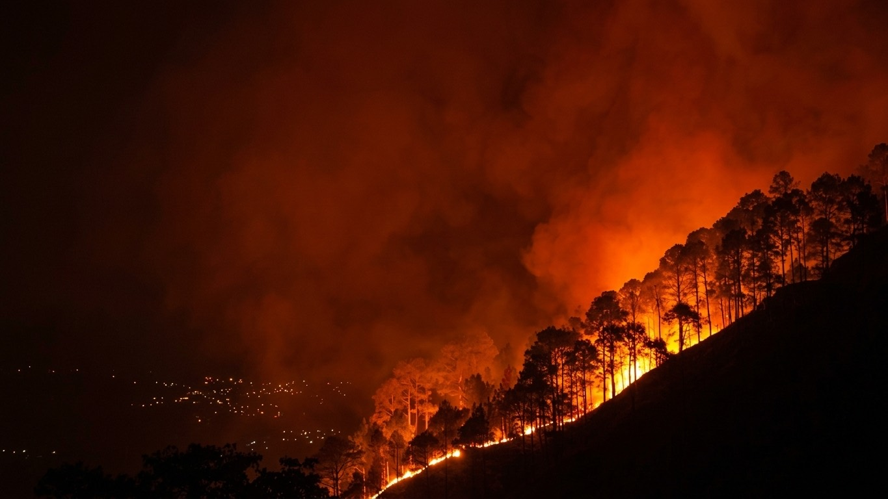

Reuters · 14 Sep 2023
Record season stretches federal crews thin
Rolling deployments moved the same hotshot teams across four states in a fortnight, leaving gaps in the ledger behind them.
Reuters · 14 Sep 2023
Record season stretches federal crews thin
Rolling deployments moved the same hotshot teams across four states in a fortnight, leaving gaps in the ledger behind them.

The burned year
Wildfires are becoming increasingly destructive across the US, threatening communities and ecosystems. Understanding the scale of the crisis is the first step to mitigating its impact.
This is an index of what agencies actually filed in 2023, and what the press actually reported. Nothing here is modelled or estimated. Where a state filed nothing, it stays blank.

The season
May
October
Most of the year's ignitions land in six months. Federal and state crews move between them on a rolling deployment — the same engines, the same hotshot teams, three thousand miles apart in a fortnight. The record below is what those deployments left behind on paper.
The confirmed states
A containment figure is not a measure of safety. It is a measure of the line we have managed to hold.Incident commander, Oregon Dept. of Forestry
Where it burned
- {{ s.label }} {{ s.value }} {{ s.note }}
In the press
What was reported
Reuters · 14 Sep 2023
Record season stretches federal crews thin
Rolling deployments moved the same hotshot teams across four states in a fortnight, leaving gaps in the ledger behind them.
 The Atlantic · 02 Nov 2023
What a containment percentage really tells you
Ninety-four per cent contained is a statement about perimeter, not about risk — and the two are routinely confused in reporting.
The Atlantic · 02 Nov 2023
What a containment percentage really tells you
Ninety-four per cent contained is a statement about perimeter, not about risk — and the two are routinely confused in reporting.
- {{ p.source }} {{ p.headline }}
Who filed it
The responding agencies
- {{ a.name }} {{ a.site }} {{ a.phone }} {{ a.coords }}

Found something wrong? We fix it in public.
Every correction is logged with the date, the source that triggered it, and the figure it replaced. Nothing is quietly edited.